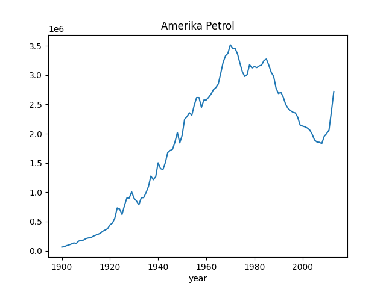
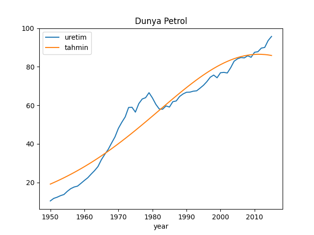

Gayri Lineer Regresyon, Petrol Tepe Noktası (Peak Oil)
Hubbard adında bir jeolog ülkesi Amerika'da petrol üretiminin 1970 senesi civarında tepe noktası yapacağını tahmin etmişti. Bu tahmin için kullandığı formül altta,
$$ c = \frac{ 2c_m}{1 + \cosh |b_c(t-t_{mc})| } $$
Formül bir S şeklini modellemektedir ve S'in tepe noktası bizim için ilginç noktadır, çünkü üretimin tepe yaptığı seneyi gösterir. Hubbard'ın böyle bir formülü kullanmasının sebebi onun petrol üretimini önce azar azar ilerleyen, sonra kolay kaynakları keşfedip onları ardı ardına işleyerek fırlama gösteren, ama sonra kolay kaynakların tükenmesi sonucunda zor olanlara başvurmaya başlayıp "artışın azalarak" nihai bir tepe noktasına ulaştıktan sonra inişe geçen bir trend olarak görmesiydi.
Hubbard bu analizi 1966 yılında yapmıştı. Bakalım biz de aynı sonuca ulaşabilecek miyiz? Biz hatta veride 1960 sonrasını kesip atalım, ve geleceği "bilmiyormuş gibi" yapıp onu tahmin etmeye uğraşalım. Önce tüm verinin bir grafiği,
import pandas as pd
us = pd.read_csv('us.csv',sep='\s')
us1960 = us[(us['year'] < 1960)]
us.set_index('year')['uretim'].plot(title='Amerika Petrol')
plt.savefig('tser_peak_01.png')

Veriyi modele uydurmak için olduğu lineer regresyon kullanmamız lazım. Bunun
için pek çok değişik yazılım var, mesela scipy.optimize altında bazı
seçenekler, fmın bunlardan biri, ya da lmfit adlı paket
kullanılabilir. Biz lmfit kullanacağız çünkü uydurduğu modeldeki
parametreler için bir güven aralığı (confidence interval) geri döndürüyor.
import pandas as pd, math
import scipy.linalg as lin
import lmfit
def find_peak(df,cminit,bcinit,tmcinit):
minyear = df['year'].min()
df['year'] = df['year'] - minyear
def err(w):
cm=w['cm'].value;bc=w['bc'].value;tmc=w['tmc'].value
tmp = (1.+np.cosh(bc*(df['year']-tmc)))
yfit = 2.0 * cm / tmp
return df['uretim']-yfit
p = lmfit.Parameters()
p.add_many(('cm', cminit), ('bc', bcinit),('tmc', tmcinit))
mi = lmfit.minimize(err, p)
lmfit.printfuncs.report_fit(mi.params)
print mi.params['tmc'].value + minyear
return mi
resus = find_peak(us1960.copy(),0,0,4)
[[Variables]]
cm: 2.8183e+06 +/- 1.34e+05 (4.76%) (init= 0)
bc: -0.06663767 +/- 0.002648 (3.98%) (init= 0)
tmc: 66.8998632 +/- 2.142183 (3.20%) (init= 4)
[[Correlations]] (unreported correlations are < 0.100)
C(cm, tmc) = 0.958
C(bc, tmc) = 0.939
C(cm, bc) = 0.825
1966.89986324
Tahmin kabaca 1967 yılı -/+ 2 sene olarak yapıldı yani bir uçta 1969 senesini veriyor, gerçek tepe noktası 1970 yılında meydana geldi. Fena değil.
Bu arada, üstteki güven aralıkları en baz hesaplar kullanarak yapıldı,
lmfit paketi çok daha çetrefil bir hesap ile bu aralığı hesaplayabiliyor,
daha fazla detay için [3]'e bakınız, çağrı şöyle,
cius = lmfit.conf_interval(resus)
for ci in cius['tmc']: print ci
(0.997, 61.74775035073711)
(0.95, 63.323717490043805)
(0.674, 64.99845280348576)
(0.0, 64.814585259840328)
(0.674, 69.12696883524737)
(0.95, 71.83614364894831)
(0.997, 75.45739023924693)
Eğer yüzde 95 güven aralığı bu hesaplara göre ayarlanırsa,
print [us['year'].min()+63, us['year'].min()+71]
[1963, 1971]
Dünya Üretimi
Şimdi ilginç bir örnek: Dünya için tepe noktası nedir, yani dünya üretiminde tepe hangi senede bulunacaktır?
import pandas as pd
import lmfit
world = pd.read_csv('world.csv',sep='\s',comment='#')
minyear = world['year'].min()
resworld = find_peak(world.copy(),0,0,0)
cm=resworld.params['cm'].value
bc=resworld.params['bc'].value
tmc=resworld.params['tmc'].value
def hubbard(x): return 2*cm / (1+np.cosh(bc*(x-tmc)))
world['tahmin'] = map(hubbard, world['year']-minyear)
[[Variables]]
cm: 86.4960058 +/- 2.078688 (2.40%) (init= 0)
bc: 0.04525865 +/- 0.002847 (6.29%) (init= 0)
tmc: 61.2630977 +/- 2.766022 (4.51%) (init= 0)
[[Correlations]] (unreported correlations are < 0.100)
C(bc, tmc) = -0.905
C(cm, tmc) = 0.693
C(cm, bc) = -0.441
2011.26309773
Sonuç 2011 yılı -/+ 3 sene, yani bir uçta 2014 senesi! Geçtiğimiz sene tepe noktasını bulmuşuz demektir bu.
world.set_index('year').plot(title='Dunya Petrol')
plt.savefig('tser_peak_02.png')

Bu noktada son 10 senedeki ilginç bir gelişmeden bahsetmek lazım. Hem ABD hem de dünya üretiminde ilginç bir zıplama oldu, çünkü ABD'de tazyikli su kullanarak (fracking) petrol çıkartan bir teknik kullanılmaya başlandı. Soru şu: Bu teknik ve üretimde zıplama acaba modelin ana varsayımında değişikliğe sebep verir mi? Teknik çok etkili ama acaba petrolün bulunmasının zorlaşması ile mi alakalı, ki çevreye kötü etkileri olduğu da biliniyor ve politikacılara baskı ile belki bitirilir, yoksa kalıcı bir şey ve öyle bir artışa sebep olacak ki şimdiye kadar olan petrol üretimini bile yarıyolda bırakacak bir başlangıç noktasındayız...? Eğer 1. durum doğru ise, iniş başlayacaktır, ve azalan petrol paylaşımı etrafında çatışmalar daha hızlanacaktır. Belki de son zamanlarda bunun etkilerini görüyoruz!
Not: Optimizasyon rutinleri için, özellikle lmfit gibi lineer
optimizasyon yapabilen rutinler için, farklı başlangıç değerleri farklı
sonuçların oluşmasına sebep olabilir. Bu sebeple stabil optimum noktasını
bulmak için birkaç farklı noktadan başlangıç yapmak gerekebilir.
Kaynaklar
[1] Wikipedia, Hubbert curve, http://en.wikipedia.org/wiki/Hubbert_curve
[2] YCharts, Brent Crude Oil Spot Price, http://ycharts.com/indicators/brent_crude_oil_spot_price
[3] Newville, Non-Linear Least Squares Minimization, http://github.com/lmfit/lmfit-py
Yukarı